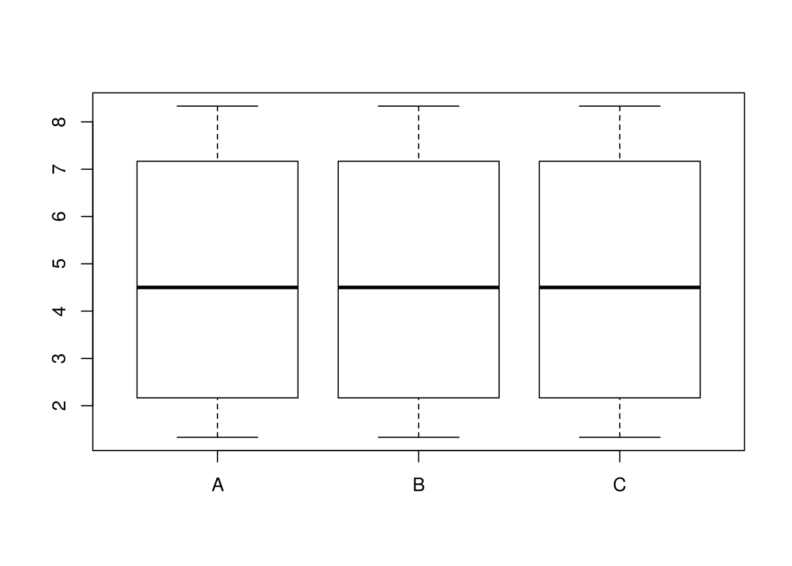

Предварительная обработка данных
Марина Варфоломеева
В этом разделе мы поговорим о том, как готовить данные 2-DIGE для статистической обработки в R (R Core Team 2018).
- Код к этому занятию
- Данные (Artigaud et al. 2015):
- Пакеты (инсталлируйте при необходимости)
# Из репозитория CRAN
install.packages(c("Hmisc", "RColorBrewer"))
# С сайта Bioconductor
if (!requireNamespace("BiocManager", quietly = TRUE))
install.packages("BiocManager")
BiocManager::install(c("Biobase", "prot2D", "impute", "pcaMethods", "limma", "hexbin"))Пример: протеом жабр гребешка Pecten maximus
Для работы мы будем использовать данные о протеоме жабр гребешка Pecten maximus (Artigaud et al. 2013). Гребешков подвергали воздействию двух разных температур (15 и 25 градусов, по 6 гребешков в каждой группе). В этом исследовании, в общей сложности, было обнаружено 766 пятен.
Загрузим данные из пакета prot2D (Artigaud et al. 2013), и сразу посмотрим, к какому классу они принадлежат
## [1] "data.frame"## [1] "data.frame"В датафрейме pecten хранятся необработанные данные интенсивностей пятен (raw volume data), а в датафрейме pecten.fac описана принадлежность гребешков к разным вариантам экспериментальной обработки. В данном случае, всего один фактор — Condition.
## [1] 766 12## [1] 12 1## Br_23865 Br_23883 Br_23884 Br_23728 Br_23729 Br_23730 Br_23731
## 126 4917372 3700556 5602088 1039165 16948657 5301985 4630511
## 155 629380 538182 542741 550110 1400204 3507947 7428518
## Br_23732 Br_23733 Br_23875 Br_23876 Br_23877
## 126 12969625 2869155 1771437 2707717 7120168
## 155 2445648 947371 412389 398940 380115## Condition
## Br_23865 15C
## Br_23883 15C
## Br_23884 15C
## Br_23728 15C
## Br_23729 15C
## Br_23730 15CИмпутация пропущенных значений.
Довольно часто бывает так, что в матрице экспрессии могут пустовать некоторые ячейки. Пятно может быть обнаружено на одном геле, но отсутствовать на других в силу различных причин. Например, в силу различий между биологическими репликами, из-за различий между техническими репликами по техническим причинам, из-за ошибок в идентификации пятен, из-за плохой изоэлектрической фокусировки, из-за малого количества белка и т.п.
Отсутствие пятна на геле может обозначать разные вещи: белок может действительно отсутствовать, либо он отсутствует в силу технических причин, либо он все же присутствует в концентрации ниже порога определения. Отсутствие пятна на всех технических повторностях может скорее означать отсутствие белка, в таких ячейках можно записать нули. Однако, если пропущенные значения появились в результате неправильного сопоставления пятен, то замена их нулями может исказить данные. Если мы имеем дело с истинно пропущенными значениями, то такие ячейки мы оставим пустыми, а R во время чтения данных автоматически преобразует их в NA.
Для импутации используют данные по всем техническим и биологическим репликам. После импутации можно будет усреднить технические реплики, либо анализировать их отдельно.
В нашем примере пропущенных значений нет. В этом легко убедиться при помощи комбинации из нескольких функций.
## Br_23865 Br_23883 Br_23884 Br_23728 Br_23729 Br_23730 Br_23731 Br_23732
## 0 0 0 0 0 0 0 0
## Br_23733 Br_23875 Br_23876 Br_23877
## 0 0 0 0Функция is.na() — проверяет, равно ли значение ее аргумента NA и возвращает логическое значение. is.na(pecten) вернет двумерную таблицу, в которой TRUE будет встречаться, только если соответствующий элемент в датафрейме pecten был NA. Логическим значениям TRUE и FALSE соответствуют 1 и 0. Если мы посчитаем суммы значений в каждом из столбцов таблицы при помощи функции colSums(), то мы получим число NA для каждого из них.
Чтобы можно было сейчас потренироваться заполнять пропущенные значения, нам потребуется, чтобы в датасете pecten всетаки они были, поэтому мы специально заменим случайно выбранные ячейки на NA.
## [1] 766 12set.seed(3743112)
id <- sample(1:9192, size = 1000) # выбираем 1000 случайных ячеек
spect <- as.matrix(pecten)
spect[id] <- NA
# Вот что получилось
#
colSums(is.na(spect))## Br_23865 Br_23883 Br_23884 Br_23728 Br_23729 Br_23730 Br_23731 Br_23732
## 90 74 79 95 83 87 67 87
## Br_23733 Br_23875 Br_23876 Br_23877
## 90 74 86 88##
## 0 1 2 3 4 5 6
## 188 289 189 72 24 3 1Теперь можно приступать к тренировке заполнения пропущенных значений.
Ниже приведены некоторые распространенные способы заполнения пропущенных значений. Не все из них одинаково хороши, кроме того, есть и много других, помимо этого списка (см., например, Sellers and Miecznikowski 2012).
Исключение переменных, в которых есть NA
Исключение переменных, в которых есть NA (использование только “надежных” белков) сильно снижает “интересность” анализа, потому что многие белки будут исключены, останется меньше пятен.
Если сравнить размеры получившихся датафреймов, видно, что пришлось исключить очень много белков.
## [1] 766 12## [1] 188 12Замена NA средними значениями
Замена NA средними значениями экспрессии данного белка в разных образцах (mean substitution). Это довольно грубый вариант, который вносит искажения в данные.
Замена NA средним по k-ближайшим соседям
Очень хорший метод импутации - замена NA при помощи среднего по k-ближайшим соседям (k-nearest neighbour averaging; Troyanskaya et al. 2001). По качеству импутации с этим методом может соперничать только баесовский метод. Метод k-ближайших соседей реализован в пакете impute на Bioconductor (Hastie et al. 2018).

Импутация по k-ближайшим соседям
Метод импутации по k-ближайшим соседям заменяет каждое пропущенное значение взвешенным средним, рассчитанным по k-ближайшим белкам-соседям, у которых это значение не пропущено (Troyanskaya et al. 2001)
Допустим, у белка #1 есть пропущенное значение экспрессии в пробе A. Алгоритм вначале находит k белков с похожим паттерном экспрессии (соседей). Соседство определяется при помощи евклидова расстояния между белками, рассчитанного по пробам с известной экспрессией. (Подробнее о различных способах рассчета расстояний можно будет узнать в разделе о классификации данных). Далее, рассчитывается взвешенное среднее экспрессии в пробе А в этих k похожих белках. Вклад каждого белка взвешивают по степени его сходства с белком #1.
Может случиться так, что у некоторых похожих белков есть пропущенные значения экспрессии на некоторых других гелях. В этом случае, сходство между белками определяется как среднее сходств, рассчитанных по гелям без пропущенных для этих белков данных. Наконец, если вдруг так оказалость, что у нескольких похожих белков неизвестна экспрессия в одном и том же геле, тогда пропущенные значения алгоритм заменяет средней экспрессией по гелю.
Для импутации при помощи среднего по k-ближайшим соседям матрицу интенсивностей сначала нужно транспонировать, чтобы пробы были в строках, а белки в столбцах.
library(impute)
# транспонируем, чтобы белки были в столбцах
trans_spect <- t(spect)
knn_dat <- impute.knn(trans_spect, k = 5)
# в результате импудации получился сложный объект - список
str(knn_dat)## List of 3
## $ data : num [1:12, 1:766] 4917372 3700556 5602088 1039165 16948657 ...
## ..- attr(*, "dimnames")=List of 2
## .. ..$ : chr [1:12] "Br_23865" "Br_23883" "Br_23884" "Br_23728" ...
## .. ..$ : chr [1:766] "126" "155" "168" "285" ...
## $ rng.seed : num 3.62e+08
## $ rng.state: int [1:626] 403 376 -1652784446 1987431197 -478897670 -1319331427 -1801468061 -1735061980 -1324196613 823244484 ...Импутация пропущенных значений при помощи байесовского анализа главных компонент
Замена NA при помощи байесовского анализа главных компонент (Bayesian principal component analysis, BPCA; Bishop 1999). Сравнение результатов импутации пропущенных значений при помощи различных методов показало, что этот метод — явный фаворит по качеству результата (Pedreschi et al. 2008). Байесовский анализ главных компонент реализован в пакете pcaMethods на Bioconductor (Stacklies et al. 2007). Здесь мы только бегло перечислим основные особенности метода, а в последнем разделе курса рассмотрим подробнее, как работает обычный анализ главных компонент.
Байесовский анализ главных компонент был адаптирован для заполнения пропущенных значений (Oba et al. 2003). Он состоит из двух частей: из анализа главных компонент (на основе максимизации ожидания) и байесовской модели. BPCA представляет многомерный массив векторов экспрессии в виде линейной комбинации меньшего числа главных осей и ошибки (ошибки и факторные координаты нормально распределены). Оптимальное для представления данных число главных осей находят при помощи кросс-валидации (метод называется kEstimate). Главные оси, найденные при помощи BPCA, чаще всего не будут ортогональны, в отличие от обычного PCA. Поскольку в исходной матрице есть пропущенные значения, главные оси будут состоять из известной и неизвестной частей. На заключительном этапе при помощи байесовского оценивания находят одновременно пропущенные значения, неизвестную часть главных осей и параметры нормального распределения.
В реализации BPCA из пакета pcaMethods пробы служат наблюдениями, гены — переменными, т.е. для применения BPCA нужно транспонировать матрицу экспрессии (Stacklies et al. 2007). Кроме того, нужно предварительно центрировать (вычесть среднее) и стандартизовать (разделить на стандартное отклонение) значения экспрессии в каждом столбце.
library(pcaMethods)
# транспонируем
trans_spect <- t(spect)
# центрируем и стандартизуем каждый столбец при помощи функции prep() из пакета pcaMethods.
scaled_spect <- prep(trans_spect, scale = "uv", center = TRUE, simple = FALSE)
# bpca
pc <- pca(scaled_spect$data, method="bpca", nPcs=2)
# восстановленные полные данные (центрированные и стандартизованные)
complete_obs <- completeObs(pc)
# возвращаем восстановленные данные в исходный масштаб
scaled_spect_complete <- prep(complete_obs, scale = scaled_spect$scale, center = scaled_spect$center, reverse = TRUE)
dim(scaled_spect_complete)## [1] 12 766# транспонируем обратно
ipect_bpca <- t(scaled_spect_complete)
# убеждаемся, что размерность правильная
dim(ipect_bpca)## [1] 766 12Сравнение результатов импутации разными методами.
В даном случае, у нас есть полные исходные данные, поэтому мы можем для интереса проверить, какой из методов импутации дал наилучший результат. В качестве меры ошибки мы посчитаем корень из средней суммы квадратов отклонений исходных полных данных и восстановленных. Эта величина называется root mean squared deviation и используется, например, для оценки качества предсказаний разных линейных моделей.
$$RMSE = \sqrt{\frac {\sum_{i=1}^{n} (y_{1,i} - y_{2,i})^2} {n}}$$
Здесь y1, i и y2, i — сравниваемые величины. Например, предсказанные моделью и наблюдаемые значения. А в нашем случае истинные и импутированные значения экспрессии.
Чем меньше значение RMSE, тем лучше.
Иногда величину RMSE нормализуют — делят либо на среднее значение, либо на диапазон значений. Полученная величина называется normalized RMSE(NRMSE). Нормализация позволяет сравнивать NRMSE для данных, измеренных в разных единицах.
$NRMSE = \frac {RMSE} {y_{max} - y_{min}}$,
Мы напишем функцию для рассчета RMSE.
RMSE <- function (act, imp, norm = FALSE){
act <- as.matrix(act)
imp <- as.matrix(imp)
max_val <- max(rbind(act, imp))
min_val <- min(rbind(act, imp))
N <- nrow(act) * ncol(act)
res <- sqrt(sum((act - imp)^2) / N)
if (norm == TRUE) res <- res / (max_val - min_val)
return(res)
}Заметьте, чтобы на самом деле адекватно оценить качество работы разных алгоритмов импутации, нужно повторить всю процедуру, включая генерацию NA, много много раз — сделать бутстреп — здесь мы сделаем только грубую оценку.
Вот значения RMSE
## [1] 1592461## [1] 1379162## [1] 1592461И вот значения NRMSE
## [1] 0.005916737## [1] 0.005124231## [1] 0.005916736Нормализация и трансформация данных
Нормализация — очень важный этап подготовки данных. Возможно, вы получите уже нормализованные данные из программы анализа гелей.
Но исходные данные в нашем примере в датасете pecten не нормализованы. Это можно видеть на боксплоте.
# создаем палитру и вектор цветов
library(RColorBrewer)
pal <- brewer.pal(9, "Set1")
cols <- pal[pecten.fac$Condition]
# боксплот
boxplot(pecten, outline = FALSE, notch = T, col = cols, main = "Исходные данные")
legend("topright", levels(pecten.fac$Condition), fill = brewer.pal(9, "Set1"), bty = "n", xpd = T)
Для того, чтобы выровнять форму распределений применяют квантильную нормализацию
Во время квантильной нормализации двух и более распределений значения переменных сначала сортируют. Затем, исходные значения одинакового ранга заменяют их средними значениями. Так, например, максимальные значения переменных станут средним максимальных значений и так далее.
Рассмотрим, что происходит при квантильной нормализации, на игрушечном примере.
Вот “матрица экспрессии”:
mat <- matrix(c(1, 7, 2, 10, 6, 3, 1, 4, 4, 7, 9, 2), ncol = 3)
rownames(mat) <- paste0("spot", 1:4)
colnames(mat) <- LETTERS[1:3]
mat## A B C
## spot1 1 6 4
## spot2 7 3 7
## spot3 2 1 9
## spot4 10 4 2Если ранжировать значения каждой из переменных, то матрица рангов будет выглядеть так:
## A B C
## spot1 1 4 2
## spot2 3 2 3
## spot3 2 1 4
## spot4 4 3 1Теперь нужно переставить значения в каждой из переменных в порядке, заданном их рангами. Если это сделать с переменной A (первый столбец), получится
## spot1 spot3 spot2 spot4
## 1 2 7 10А вот и вся ранжированная матрица
## A B C
## [1,] 1 1 2
## [2,] 2 3 4
## [3,] 7 4 7
## [4,] 10 6 9На следующем этапе нужно посчитать среднее значение для каждой из строк — “цену” каждого ранга.
## [1] 1.333333 3.000000 6.000000 8.333333Теперь эти “цены рангов” можно подставить вместо рангов в исходную матрицу. Если это сделать с первым столбцом, то получится
## [1] 1.333333 6.000000 3.000000 8.333333Подставляем цены рангов вместо рангов во всю исходную матрицу
## A B C
## [1,] 1.333333 8.333333 3.000000
## [2,] 6.000000 3.000000 6.000000
## [3,] 3.000000 1.333333 8.333333
## [4,] 8.333333 6.000000 1.333333После нормализации форма распределения всех переменных выравнялась.

Теперь давайте применим квантильную нормализацию к данным о протеоме гребешков.
library(limma)
pecten_norm <- normalizeQuantiles(pecten)
boxplot(pecten_norm, outline = FALSE, boxwex = 0.7, notch = T, col = cols, main = "Нормализованные данные")
legend("topright", levels(pecten.fac$Condition), fill = pal, bty = "n", xpd = T)
После нормализации размах варьирования величин экспрессии в разных образцах выровнялся, но распределение по-прежнему асимметрично.
Для того чтобы статистические тесты лучше работали, нужно сделать распределение данных более симметричным и похожим на нормальное. Для этого мы должны логарифмировать данные.
Обычно логарифмируют по основанию 2. С логарифмами по основанию 2 принято работать из-за удобства вычислений (числа получаются меньше по абсолютной величине) и удобства интерпретации (если мы считаем разницу логарифмов экспрессии в опыте и контроле и она равна единице, то это означает, что экспрессия различается в два раза).
Если в ваших исходных данных есть нули, то можно перед логарифмированием прибавить к ним небольшую константу, чтобы не получить -Inf. Т.е. преборазовать log2(x + 1).
pecten_log <- log2(pecten_norm)
boxplot(pecten_log, outline = FALSE, boxwex = 0.7, notch = T, col = cols, main = "Логарифмированные\nнормализованные данные")
legend("topright", levels(pecten.fac$Condition), fill = pal, bty = "n", xpd = T)
После нормализации и логарифмирования распределение стало симметричным и приблизительно одинаковым во всех образцах — с данными можно работать дальше.
RI-plot (MA-plot)
MA-plot (Mean–Average plot) был изобретен для контроля качества данных экспрессии (Dudoit et al. 2002). Для протеомики он был адаптирован немного позднее и получил название RI-plot (Ratio–Intensity plot)(Meunier et al. 2005).
Сначала разберемся, как устроен MA-plot на примере исходных данных.
X1 <- pecten[, 1:6]
X2 <- pecten[, 7:12]
R <- log2(rowMeans(X2) / rowMeans(X1))
I <- log10(rowMeans(X2) * rowMeans(X1))- R — это разница уровней экспрессии в образцах
- I — это средний уровень экспрессии во множестве образцов

По графику RI-plot можно оценить качество данных.
- Можно оценить наличие выбросов, отскакивающих значений.
- По наличию паттернов можно определить, нужно ли преобразовывать данные. Увеличивающийся разброс значений или искривленный график говорит о плохой нормализации.
На графике исходных данных видно, (1) чем больше уровень экспрессии, тем больше разброс различий ; (2) график искривлен — это видно по положению плотной массы точек в центре.
После нормализации проблемы практически исчезнут.
X1 <- pecten_norm[, 1:6]
X2 <- pecten_norm[, 7:12]
R <- log2(rowMeans(X2) / rowMeans(X1))
I <- log10(rowMeans(X2) * rowMeans(X1))
plot(I, R, main = "Normalized data", pch = 21, xlab = "Intensity", ylab = "Ratio")
abline(h = 0)
В пакете prot2D (Artigaud et al. 2013) есть специальная функция RIplot()
Боремся с оверплотингом (overplotting)
У приведенных выше графиков есть неприятные свойства — из-за того, что много точек данных 1) они накладываются друг на друга; 2) график долго рисуется, большой объем векторного файла при сохранении. Можно усовершенствовать график одним из способов.
Для решения первой проблемы — если вас волнует лишь наложение точек, но не волнует объем файла — можно сделать точки полупрозрачными.
# 1) График с полупрозрачными точками на светлом фоне
# Генерируем полупрозрачные цвета
col_btransp <- adjustcolor("darkgreen", alpha.f = 0.2)
plot(I, R, main = "Normalized data,\ntransparent markers", pch = 19, cex = 1.2, xlab = "Intensity", ylab = "Ratio", col = col_btransp)
abline(h = 0)Второй вариант, при помощи цвета точек показать плотность их распределения. Чтобы выбросы были заметнее, можно сделать график на темном фоне. Подробнее о графических настройках par() можно посмотреть в файле справки ?graphical parameters.
Мы будем использовать Брюеровскую (Harrower and Brewer 2003) желто-зеленую палитру из пакета RColorBrewer (Neuwirth 2014).
# Генерируем цвета
library(RColorBrewer)
ramp_ylgn <- colorRampPalette(brewer.pal(9,"YlGn")[-1])
col_density <- densCols(I, R, colramp = ramp_ylgn)
# Цвет фона, осей и пр.
op <- par(bg="black", fg="white", col.axis="white", col.lab="white", col.sub="white", col.main="white")
plot(I, R, col = col_density, pch = 19, cex = 0.5, main = 'Normalized data,\ncolour reflects density')
abline(h = 0)
par(op)Чтобы решить вторую проблему — если важно уменьшить объем файла — можно визуализировать число точек внутри гексагональных ячеек при помощи пакета hexbin (Carr et al. 2018). Подробнее о настройках можно посмотреть в справке ?gplot.hexbin
Сохранение графиков в R
# Создаем директорию для картинок, чтобы не захламлять рабочую директорию. В данном случае, используем относительный путь.
dir.create(file.path("./figs"))
# pdf нужны размеры в дюймах
library(grid)
wid <- convertX(unit(12, "cm"), "inches")
hei <- convertY(unit(8, "cm"), "inches")
pdf("figs/f1.pdf", width = wid, height = hei, bg = "white", paper = "special", onefile = FALSE)
op <- par(cex = 0.6)
plot(I, R, main = "Normalized data", pch = 19, xlab = "Intensity", ylab = "Ratio", col = col_btransp)
abline(h = 0)
par(op)
dev.off()
# можем встроить шрифты
embedFonts(file = "figs/f1.pdf", outfile = "figs/f1emb.pdf")
# png сам умеет переводить единицы длины-ширины.
png("figs/f1.png", width = 12, height = 8, units = "cm", res = 300, type = "cairo-png")
op <- par(cex = 0.6)
plot(I, R, main = "Normalized data", pch = 19, xlab = "Intensity", ylab = "Ratio", col = col_btransp)
abline(h = 0)
par(op)
dev.off()ExpressionSet Objects
Результаты измерения интенсивности пятен на гелях обычно записываются в виде нескольких таблиц:
- Данные об интенсивности пятен — таблица p × n, где n гелей записаны в столбцах, а интенсивности p белков в строках.
- Данные о пробах — таблица n × q, в которой содержится информация о q свойствах проб (об экспериментальных факторах, повторностях).
- Данные о белоках — таблица p × r, в которой описаны r свойств белков (например, тривиальное название, функция).
- Данные об эксперименте в целом — список произвольной длины, в котором содержатся свойства эксперимента и их значения (например, информация об экспериментальном объекте, имя экспериментатора, ссылка на публикацию и т.п.).
Класс ExpressionSet разработан специально для того, чтобы хранить данные из этих нескольких таблиц вместе. Многие пакеты с Bioconductor работают с данными в этом формате. Объекты ExpressionSet понадобятся нам позже для анализа дифференциальной экспрессии при помощи пакета limma (Ritchie et al. 2015).
Объект ExpressionSet
Создаем ExpressionSet вручную
Давайте научимся создавать самостоятельно объекты ExpressionSet. Чтобы работать с этим классом объектов нам понадобятся функции из пакета Biobase с Bioconductor.
Для создания ExpressionSet нам понадобится несколько вещей:
- Во-первых, данные об интенсивности пятен. Это просто наши (нормализованные) данные интенсивности пятен.
- Во-вторых, данные о пробах. Это аннотированный датафрейм (
AnnotatedDataFrame), который состоит из двух частей: датафрейм с экспериментальными факторами, информацией о повторностях и т.п., а так же метаданные, в которых записаны расшифровки названий факторов. Подробнее см. в справке?AnnotatedDataFrame
pheno_data <- pecten.fac
pheno_metadata <- data.frame(
labelDescription = c("Experimental condition"),
row.names=c("Condition"))
pheno_data <- new("AnnotatedDataFrame",
data = pheno_data,
varMetadata = pheno_metadata)- В-третьих, данные о белоках, если они есть. В данном случае, у нас нет никакой информации о белоках в датасете о гребешках, хотя обычно такая информация бывает (появляется после MS/MS анализа пятен). Поэтому давайте сейчас в качестве тренировки создадим таблицу с данными о белоках с единственной переменной — номерами пятен. Имена строк в этой таблице должны совпадать с именами строк в данных об интенсивности пятен в
expr_data.
feature_data <- data.frame(Spot = rownames(pecten_norm))
rownames(feature_data) <- rownames(expr_data)
feature_metadata <- data.frame(
labelDescription = c("Spot number"),
row.names = c("Spot"))
f_data <- new("AnnotatedDataFrame",
data = feature_data,
varMetadata = feature_metadata)- В-четвертых, данные о самом эксперименте. Их особенно важно добавить, если вы вдруг собираетесь делиться данными с кем-то. Данные об эксперименте для включения в
ExpressionSetдолжны записаны в объект классаMIAME. В файле справки по этому объекту описаны названия и содержание полей (?MIAME). Мы заполним только некоторые для примера.
experiment_data <-
new("MIAME",
name="Sebastien Artigaud et al.",
lab="lab",
contact="email@domain.com",
title="Identifying differentially expressed proteins in two-dimensional electrophoresis experiments: inputs from transcriptomics statistical tools.",
abstract="Abstract",
other=list(notes="dataset from prot2D package"))Наконец, когда у нас есть все четыре элемента (на самом деле, достаточно минимум данных об интенсивности пятен), мы можем собрать из них EspressionSet. Подробнее см. в справке ?ExpressionSet
Операции с ExpressionSet объектами.
## [1] "ExpressionSet"
## attr(,"package")
## [1] "Biobase"## ExpressionSet (storageMode: lockedEnvironment)
## assayData: 766 features, 12 samples
## element names: exprs
## protocolData: none
## phenoData
## sampleNames: Br_23865 Br_23883 ... Br_23877 (12 total)
## varLabels: Condition
## varMetadata: labelDescription
## featureData
## featureNames: 126 155 ... 3067 (766 total)
## fvarLabels: Spot
## fvarMetadata: labelDescription
## experimentData: use 'experimentData(object)'
## Annotation:Извлекаем данные о пробах
## Condition
## Br_23865 15C
## Br_23883 15C
## Br_23884 15C
## Br_23728 15C
## Br_23729 15C
## Br_23730 15C
## Br_23731 25C
## Br_23732 25C
## Br_23733 25C
## Br_23875 25C
## Br_23876 25C
## Br_23877 25C## [1] 15C 15C 15C 15C 15C 15C 25C 25C 25C 25C 25C 25C
## Levels: 15C 25C## An object of class 'AnnotatedDataFrame'
## sampleNames: Br_23865 Br_23883 ... Br_23877 (12 total)
## varLabels: Condition
## varMetadata: labelDescriptionНазвания факторов
## [1] "Condition"Информация о факторах (более длинное имя, например, если есть)
## labelDescription
## Condition Experimental conditionМожно, например, посчитать, сколько в каждой группе было образцов при помощи функции table()
##
## 15C 25C
## 6 6Можно извлечь информацию о белоках. В данном случае ее нет - просто номера пятен.
## Spot
## 126 126
## 155 155
## 168 168
## 285 285
## 315 315
## 328 328## [1] "Spot"## An object of class 'AnnotatedDataFrame'
## featureNames: 126 155 ... 3067 (766 total)
## varLabels: Spot
## varMetadata: labelDescriptionИзвлечение данных экспрессии
## Br_23865 Br_23883 Br_23884
## 126 21.47163 21.35892 21.94415
## 155 18.75859 18.49826 18.54252
## 168 19.55404 19.13246 19.92785
## 285 18.98169 18.86374 19.47428
## 315 17.26368 17.72549 17.83685Создание сабсетов
## Features Samples
## 766 12## Features Samples
## 766 6Сохранение файлов с данными в R
Задания для самостоятельной работы
Для выполнения этих заданий вы можете использовать либо свои собственные данные, либо данные о протеоме жабр гребешков при разной температуре и разном содержании кислорода (Prot_Br_H_T.csv, Prot_Br_H_T_factor.csv) (Artigaud et al. 2015).
Задание 1
Создайте искуственным образом пропущенные значения в данных. Потренируйтесь их заполнять разными способами. Сравните качество работы этих методов.
Задание 2
Оцените распределение данных (боксплот, RI-plot). Выполните нормализацию, если это необходимо. Сохраните график и нормализованные данные.
Задание 3
Создайте ExpressionSet и сохраните его.
Ссылки
Artigaud, S., O. Gauthier, and V. Pichereau. 2013. Identifying differentially expressed proteins in two-dimensional electrophoresis experiments: Inputs from transcriptomics statistical tools. Bioinformatics 29:2729–2734.
Artigaud, S., C. Lacroix, J. Richard, J. Flye-Sainte-Marie, L. Bargelloni, and V. Pichereau. 2015. Proteomic responses to hypoxia at different temperatures in the great scallop ( Pecten maximus ). PeerJ 3:e871.
Bishop, C. M. 1999. Bayesian pca. Advances in neural information processing systems:382–388.
Carr, D., ported by Nicholas Lewin-Koh, M. Maechler, and contains copies of lattice functions written by Deepayan Sarkar. 2018. Hexbin: Hexagonal binning routines.
Dudoit, S., J. Fridlyand, and T. P. Speed. 2002. Comparison of discrimination methods for the classification of tumors using gene expression data. Journal of the American statistical association 97:77–87.
Harrower, M., and C. A. Brewer. 2003. ColorBrewer. Org: An online tool for selecting colour schemes for maps. The Cartographic Journal 40:27–37.
Hastie, T., R. Tibshirani, B. Narasimhan, and G. Chu. 2018. Impute: Impute: Imputation for microarray data.
Meunier, B., J. Bouley, I. Piec, C. Bernard, B. Picard, and J.-F. Hocquette. 2005. Data analysis methods for detection of differential protein expression in two-dimensional gel electrophoresis. Analytical biochemistry 340:226–230.
Neuwirth, E. 2014. RColorBrewer: ColorBrewer palettes.
Oba, S., M.-a. Sato, I. Takemasa, M. Monden, K.-i. Matsubara, and S. Ishii. 2003. A Bayesian missing value estimation method for gene expression profile data. Bioinformatics 19:2088–2096.
Pedreschi, R., M. L. Hertog, S. C. Carpentier, J. Lammertyn, J. Robben, J.-P. Noben, B. Panis, R. Swennen, and B. M. Nicolaï. 2008. Treatment of missing values for multivariate statistical analysis of gel-based proteomics data. Proteomics 8:1371–1383.
R Core Team. 2018. R: A language and environment for statistical computing. R Foundation for Statistical Computing, Vienna, Austria.
Ritchie, M. E., B. Phipson, D. Wu, Y. Hu, C. W. Law, W. Shi, and G. K. Smyth. 2015. limma powers differential expression analyses for RNA-sequencing and microarray studies. Nucleic Acids Research 43:e47.
Sellers, K. F., and J. C. Miecznikowski. 2012. Statistical Analysis of Gel Electrophoresis Data. Pages 199–216 in S. Magdeldin, editor. Gel Electrophoresis - Principles and Basics. INTECH Open Access Publisher.
Stacklies, W., H. Redestig, M. Scholz, D. Walther, and J. Selbig. 2007. PcaMethods – a bioconductor package providing pca methods for incomplete data. Bioinformatics 23:1164–1167.
Troyanskaya, O., M. Cantor, G. Sherlock, P. Brown, T. Hastie, R. Tibshirani, D. Botstein, and R. B. Altman. 2001. Missing value estimation methods for DNA microarrays. Bioinformatics 17:520–525.